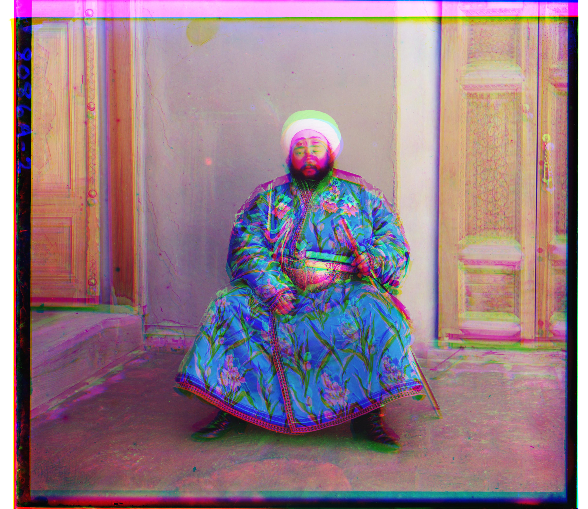
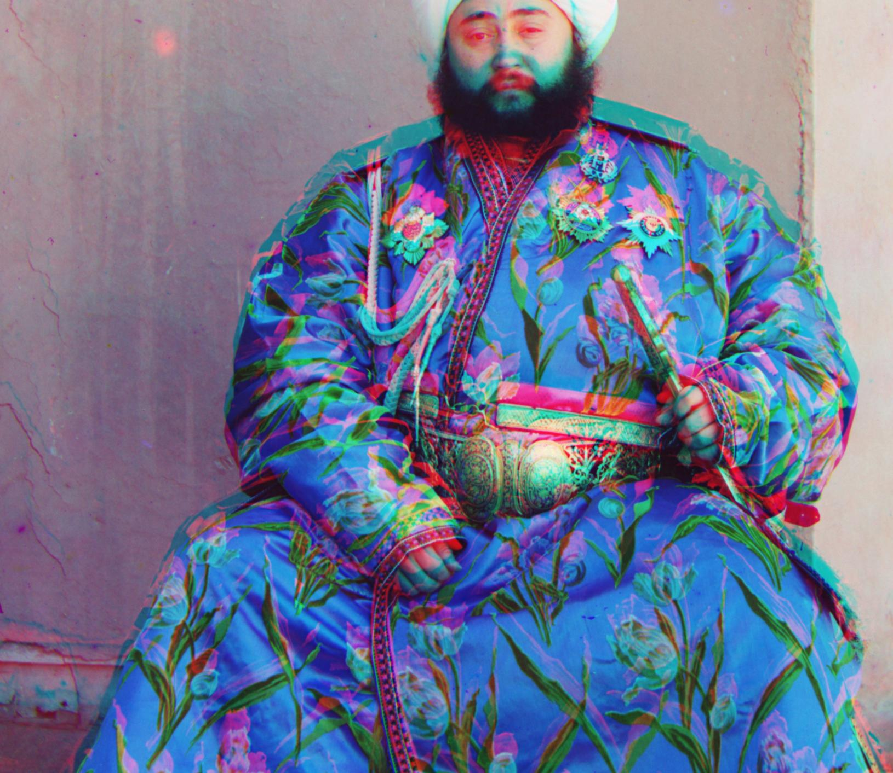

Project overview
In the early 1900s, Sergei Mikhailovich Prokudin-Gorskii traveled across the Russian Empire, photographing each scene with three sequential exposures through blue, green, and red filters. The Library of Congress later digitized these glass-plate negatives.
My pipeline splits each scan into B/G/R thirds, aligns G and R to B (single-scale NCC for small images and a coarse-to-fine pyramid for large TIFs), then stacks them into RGB. Finally I apply gray-world white balance and a 5–95% percentile contrast stretch. Metrics are computed on an interior crop to avoid border bias.
From glass plate to color
I split each plate into B, G, R thirds, align G and R to B, then stack into RGB. For small JPGs I use single scale with NCC on a cropped interior. For large TIFs I switch to a coarse to fine pyramid that refines a small window at each level. After alignment I apply a 5 to 95 percentile contrast stretch and a simple gray world white balance.
Choose showcase image
What I built and how I got it to work
icon. NCC on a 10 to 15 percent interior produced a clean alignment. The border crop matters because the colored edges otherwise bias the score.
three_generations. After alignment the image was magenta. I used gray world white balance: compute the mean of each channel, scale each channel by mean(all) / mean(channel), then clip to [0,1].
emir. TIF with large channel brightness differences. L2 on raw pixels failed. NCC helped but still got pulled by borders. A pyramid search found the displacement fast. Seven levels with a window of five worked across images. Fewer levels missed the coarse shift. Too many levels drifted.
Working out emir.tif step by step
0) Raw brightness only — compare intensities directly
I started by comparing raw brightness between channels
Problem: cross-channel brightness differs a lot in emir.tif. Comparing raw intensities lets illumination/border effects
dominate the score, so the alignment drifts and produces heavy color fringing.
1) Edge differentiator vs. raw brightness
In Card 0 I compared raw pixel brightness with an L2 score. That failed because different channels can have very different overall illumination, so brightness alone isn’t reliable.
To fix that, I built an edge differentiator. Instead of comparing intensities, it compares changes in intensity: essentially, looking at where edges (outlines, textures, object boundaries) appear in each channel. The result is called an edge map: a grayscale image that highlights only the edges of structures. Alignment now follows edges instead of being distracted by brightness differences across channels.
Why it’s different from Card 0: Card 0 only looked at raw brightness values. The edge map ignores global illumination differences, so structures (like outlines and textures) line up much more reliably.
The exact central-difference formula for the edge map is shown in the methods reference below, but at a high level it’s just measuring how quickly intensities change in the x- and y-directions and combining them.
Open full image ↗ I also tried a brute-force single scale using the L2 metric (see formula reference ↗). L2 compares raw intensity differences and is very sensitive to bright borders and cross-channel brightness. The best score landed at the wrong shift and color fringes appeared. With no search window or pyramid, the full TIF brute force took about 55 minutes for Emir.
Open full image ↗2) Overcrop with L2
To fight that border bias I cut away a wide margin first. It also removed real structure, reduced overlap, and made the search unstable. The result looked plausible numerically but was still misaligned.
Open full image ↗ 3) NCC without a crop
I switched to normalized cross-correlation (NCC) (see formula reference ↗), which normalizes mean and variance. That helped, yet without cropping the interior the tinted borders still pulled the correlation peak.
Open full image ↗3.5 NCC with correct interior crop (looks right, too slow)
Cropping to the interior \( (1-2f)H \times (1-2f)W \) with and searching within a window size of 15 pixels up, down, left, and right removed the border bias and the alignment looked right. On the full-resolution TIF, though, a wide single-scale search still meant evaluating many candidate shifts over millions of pixels. This took about 3 minutes for Emir, so I moved to a pyramid.
Open cropped NCC result (slow) ↗
4) Pyramid search baseline
I built a pyramid: estimate offsets on a coarse downsampled image and refine at each higher resolution. With 4 levels and a window of 15, it was correct but slow at about 50 s for Emir.
Open baseline full image ↗5) Final pyramid: 7 levels, window 5
Two levels missed the coarse displacement. Ten or more drifted. Seven levels with a window of five worked across the dataset and kept runtimes reasonable, so that became the final method for Emir.
Open final aligned full image ↗Methods in formulas (quick reference)
Edge map (central differences).
L2 distance.
Normalized cross-correlation (NCC).
Gray-world white balance.
Percentile contrast.
What the symbols mean
- $G_x,G_y$ — central-difference gradients (horizontal/vertical rate of change).
- $E$ — edge-magnitude map used as input when
is\_grad=true. - $A,B$ — two image channels being compared (e.g. Blue vs Red).
- $\Omega$ — cropped interior region (borders excluded).
- $\bar A,\bar B$ — mean intensity of each channel.
- $m_R,m_G,m_B$ — average intensity of R, G, B channels.
- $p_5,p_{95}$ — 5th and 95th percentile values per channel.
- $\varepsilon$ — very small stabilizer to avoid divide by zero in NCC.
Why these formulas? Edge maps compare structure (changes) rather than raw brightness, so cross-channel illumination differences affect the score far less while true edges align strongly. L2 highlights raw pixel error but is brightness sensitive. NCC normalizes out brightness and contrast. Gray-world assumes the average scene is gray and balances channels. Percentile contrast expands midtones while clipping outliers.
Offsets and runtimes
Offsets are G to B and R to B as (dx, dy). Times are in seconds.
Baseline
| Image | Preview | G (dx,dy) | R (dx,dy) | Runtime |
|---|
After all features
| Image | Preview | G (dx,dy) | R (dx,dy) | Runtime |
|---|
Runtime comparison
Baseline gallery
Part 1. Brute-force single-scale using L2 and NCC (no pyramid) — shown for
cathedral, monastery, and tobolsk.
Part 2. Multi-scale alignment with multiscale pyramids for all remaining images.
Part 1 — Brute force (L2 / NCC)
Part 2 — Multi-scale alignment with pyramids
Baseline vs all features — 14 image comparisons
Gallery after all features
Additional images from the Library of Congress
These are extra plates I ran my code on, sourced from the Library of Congress Prokudin-Gorskii collection . Drag the handle on each to compare my baseline alignment vs. the version with white balance & contrast.
Click on any image to view it in full size.